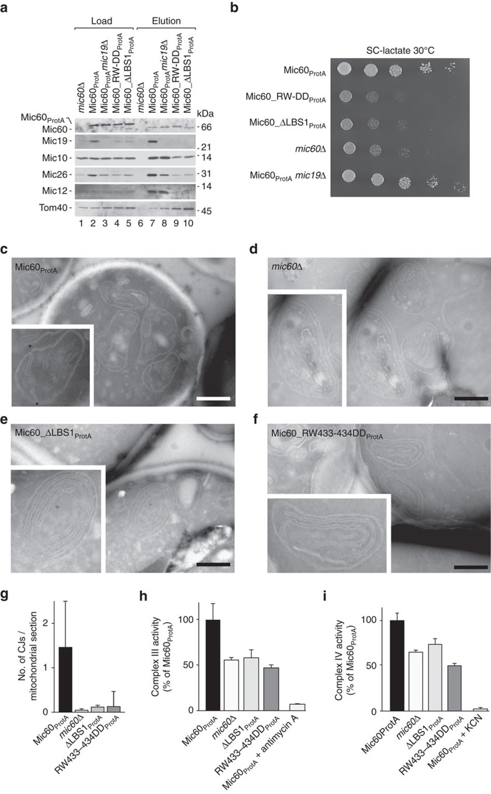

Mic60-Mic19 complex
A heteromeric MICOS subcomplex composed of Mic60 and Mic19 that couples protein assembly to mitochondrial inner-membrane remodeling and crista-junction organization. [DOI:10.1126/sciadv.abo4946]

NCBITaxon:4932) · Manuel Hessenberger, Ralf M. Zerbes, Heike Rampelt, Séverine Kunz, Audrey H. Xavier, Bettina Purfürst, Hauke Lilie, Nikolaus Pfanner, Martin van der Laan, Oliver Daumke; CC BY, via PubMed Central · CC_BY_4_0 · source: PMC PMC5460017.1 f4 · DOI:10.1038/ncomms15258Synonyms: Mic19-Mic60 subcomplex
Part of: MICOS complex (GO:0061617)
Components
| Component | Type | Part of / acts on | Grounding | Genes | Stoichiometry | Essential | Role |
|---|---|---|---|---|---|---|---|
| MICOS complex subunit MIC60 | Protein | part of | InterPro:IPR019133 | MIC60 | Membrane-anchored scaffold whose intermembrane-space region binds Mic19 and lipids; its coiled-coil and mitofilin regions contribute oligomerization and membrane-remodeling interfaces.
| ||
| MICOS complex subunit Mic19 | Protein | part of | Reviewed label only (reviewed name; no accession asserted) | MIC19 | CHCH-domain-containing binding partner that promotes Mic60 higher-order assembly and enhances membrane remodeling by the soluble Mic60 region in fungal reconstitution assays.
|
Taxonomic distribution
NCBITaxon:4932Saccharomyces cerevisiae — COMMON: Budding-yeast mitochondrial MICOS contains the Mic60-Mic19 subcomplex; the cited experiments use YPH499 derivatives. This species-level assertion does not establish universal presence in fungi or every strain. [DOI:10.1126/sciadv.abo4946]
Canonical examples
NCBITaxon:4932Saccharomyces cerevisiae — YPH499-derived strains expressing Mic60 or Mic19 interface variants were examined by mitochondrial affinity purification and electron microscopy. These in vivo experiments are distinct from the purified Chaetomium thermophilum proteins used for membrane reconstitution. [DOI:10.1126/sciadv.abo4946]
Functions
- cristae formation
GO:0042407— Supports formation and organization of mitochondrial crista junctions through cooperative Mic60-Mic19 assembly and membrane remodeling, within the larger MICOS machinery.DOI:10.1038/ncomms15258Mic60 lipid-binding mutants in YPH499-derived yeast lose normal crista junctions and accumulate detached lamellar cristae; purified fungal Mic19 enhances Mic60-driven membrane deformation.DOI:10.1126/sciadv.abo4946Mic60 oligomerization-interface and Mic60-Mic19 interaction-interface variants impair crista-junction formation in yeast. The complex is not asserted to be sufficient for native crista formation by itself.
Mechanism graphs
Direct binding and cooperative membrane remodeling by fungal Mic60 and Mic19 (FUNCTION)
Purified fungal proteins establish direct interaction, Mic60-dependent lipid recruitment, Mic19-enhanced oligomerization and membrane tubulation.
| Subject | Predicate | Object | Evidence |
|---|---|---|---|
| MICOS complex subunit Mic19 | directly binds | MICOS complex subunit MIC60 |
|
| MICOS complex subunit MIC60 | recruits Mic19 into | Lipid-associated Mic60-Mic19 assembly |
|
| MICOS complex subunit Mic19 | promotes | Higher-order Mic60-Mic19 assembly |
|
| MICOS complex subunit MIC60 | drives | Liposome tubulation and branching |
|
| Lipid-associated Mic60-Mic19 assembly | enhances | Liposome tubulation and branching |
|
Discussions
- CURATION_TODO (OPEN): Establish an exact taxon-agnostic Mic19 family grounding without treating DUF1690 membership as identity. Reviewed yeast Mic19 cross-references a fungal DUF family, but the current family description does not establish equivalence to the complete Mic19 component class. CHCH-domain membership alone is also insufficient.
- CURATION_TODO (OPEN): Determine the native microbial complex architecture and copy number, and directly test the proposed crista-junction strut and diffusion-barrier functions. The 2022 structural model combines isolated fungal domains and engineered fusion constructs. The authors explicitly leave the molecular identity of yeast junction-spanning tomographic densities unresolved. Purified-protein oligomerization does not prove one universal native 4:4 assembly.
- CURATION_TODO (RESOLVED): Keep the Mic60-Mic19 subcomplex distinct from full MICOS, MIB and experimental expression hosts. Other MICOS subunits and outer-membrane partners occur in the surrounding machinery but are not constituent identities of this two-component subcomplex. Expression in Escherichia coli does not make the complex a bacterial structure.
Evidence
DOI:10.1038/ncomms15258Hessenberger et al. (2017), Regulated membrane remodeling by Mic60 controls formation of mitochondrial crista junctions. Full Results, Discussion, methods and Figure 4 inspected in checksum-verified PMC5460017 version 1.DOI:10.1126/sciadv.abo4946Bock-Bierbaum et al. (2022), Structural insights into crista junction formation by the Mic60-Mic19 complex. Full Results, Discussion and relevant methods inspected in checksum-verified PMC9432830 version 1.GO:0098800The local complex is a type of inner mitochondrial membrane protein complex; this broader GO term is not its exact identity.GO:0061617MICOS is the containing complex, not an is-a parent or synonym of the two-component subcomplex.
Curation history
2026-10-04T21:48:42Zcodex · CREATED_RECORD — Scaffolded by scripts/new_record.py2026-10-04T21:50:14Zcodex · EXPANDED_RECORD — Added source-bounded fungal components, yeast scope, cristae-formation function, direct biochemical mechanism and explicit family/native-architecture limitations.2026-10-04T21:50:36Zpmc_oa · ADD_IMAGE — Added PMC5460017.1 f4; version, CC licence, JATS figure identity and media md5 verified through the PMC OA S3 dataset.